Empowering Young Innovators for a Sustainable Future
Tazakka Science and Technology Club — a STEM community where santri learn through discovery, build solutions with technology, and grow innovation through research.

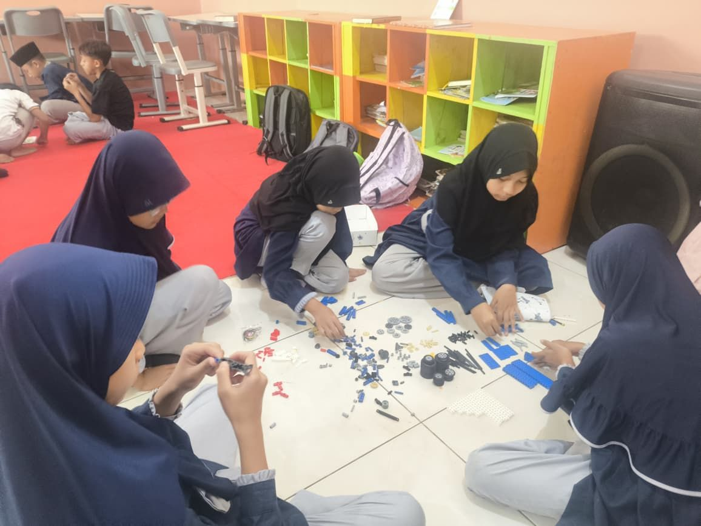
IIIEX 2026
A home for scientific curiosity
Tazakka Science and Technology Club (TSTC) is a science and technology development community within Pondok Modern Tazakka, Batang Regency, Central Java, Indonesia. It is a platform for santri to explore scientific knowledge, develop technological competencies, conduct research, and formulate innovative solutions to real-world problems.
Activities integrate STEM through project-based learning, experimentation, research, and prototype development — building critical thinking, creativity, problem solving, communication, collaboration, and independent learning.
To become a science and technology community that develops a generation of young people who think scientifically, innovate collaboratively, and produce STEM-based solutions that benefit society and the environment.
Our Mission
Develop scientific thinking skills through research, experimentation, observation, and data analysis.
Strengthen STEM competencies through practical projects in programming, electronics, IoT, robotics, and other technologies.
Foster creativity and innovation in designing solutions to real-world problems.
Establish a systematic, well-documented, and sustainable research culture.
Develop collaboration and scientific communication through teamwork, presentations, exhibitions, and knowledge sharing.
Give santri opportunities to produce works that can be developed, tested, replicated, and utilized.
Build networks with schools, universities, science communities, research institutions, and industries.
Sustain STEM activities through student succession, documentation, module development, and club resources.
Values We Develop
Areas of focus
Seven fields where santri research, build, and learn together.
Scientific Research
Research and experimentation to understand scientific phenomena and generate reliable data and findings — the heart of every TSTC project.
Internet of Things
Sensors, microcontrollers, and connectivity for monitoring and automation.
Robotics & Automation
Robots and automated systems programmed for specific tasks.
Artificial Intelligence
AI in education, robotics, data analysis, and problem solving.
Electronics & Engineering
Circuits, control systems, and engineered prototypes.
Sustainable Technology
Hydroponics, aquaponics, water and energy management.
STEM Education
Experiments and modules that strengthen scientific literacy.
Our Learning Cycle
Find real problems to investigate.
Literature, observation, and data.
Systems, circuits, or experiments.
Prototypes and experimental setups.
Clear procedures to gather data.
Assess performance and effectiveness.
Evaluate and refine the design.
Reports, exhibitions, competitions.
Supporting Activities
Results that speak
Growth of the club and recognition at national and international events.
Honors & Recognition
Collaboration & Networking
Daftar gratis, belajar tanpa batas
Siapa pun bisa mendaftar. Menu Download gratis untuk anggota; Belajar & Ujian dengan langganan Premium.
Belajar
Materi dan aplikasi untuk setiap mata pelajaran sains.
- Matematika
- Fisika
- Kimia
- Biologi
Download
Informasi resmi dan dokumen untuk anggota.
- Pengumuman
- Hasil Ujian
- Sertifikat
Ujian
Bahan latihan dan soal ujian dari pembina.
- Latihan Soal & Pembahasan
- Soal Ujian
- ✓ Semua fitur Anggota
- ✓ Materi & aplikasi 4 mata pelajaran
- ✓ Latihan soal + pembahasan
- ✓ Soal ujian
Sustainability roadmap 2026–2033
Foundation
Documentation, project repository, STEM curriculum integration, member training.
Expansion
Project portfolio scaling, peer mentorship, workshops, national competitions.
Collaboration
University and industry partnerships, inter-school science networks.
Regional Engagement
International collaboration and an Asia-Pacific science club network.
Institutionalization
STEM incubation center, research publishing, STEM certification.
Global Leadership
Student exchange, IP filing, global summits, research fellowships.
Commercialization
Tech transfer, educational advisory, smart campus integration.
Sustainable Legacy
Global social impact, STEM advocacy hub, green tech excellence.
Moments of discovery
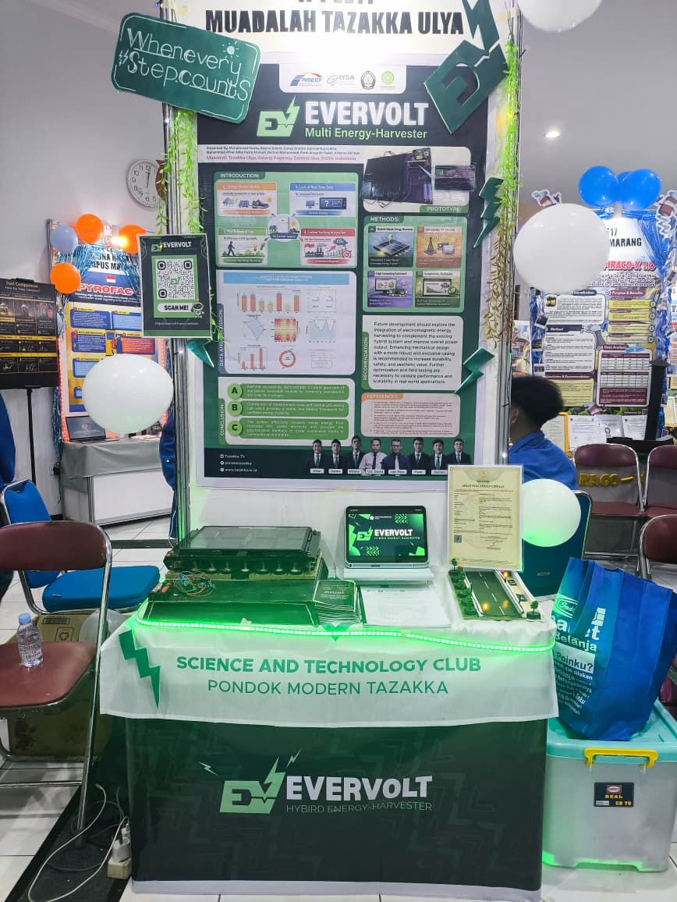


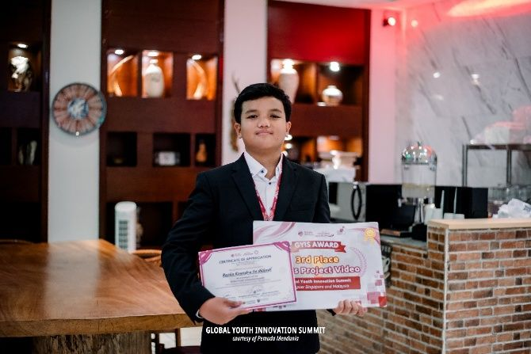


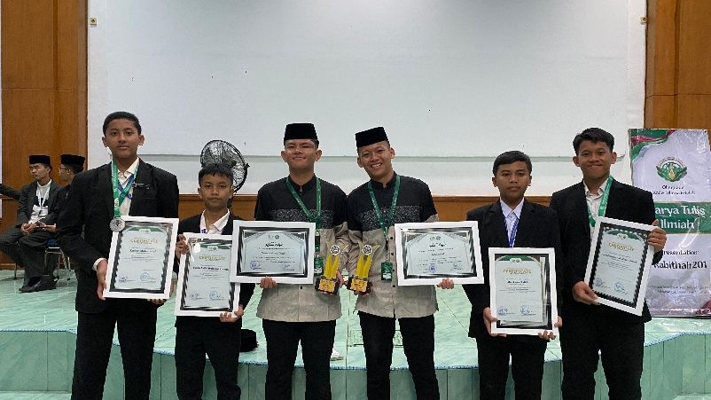


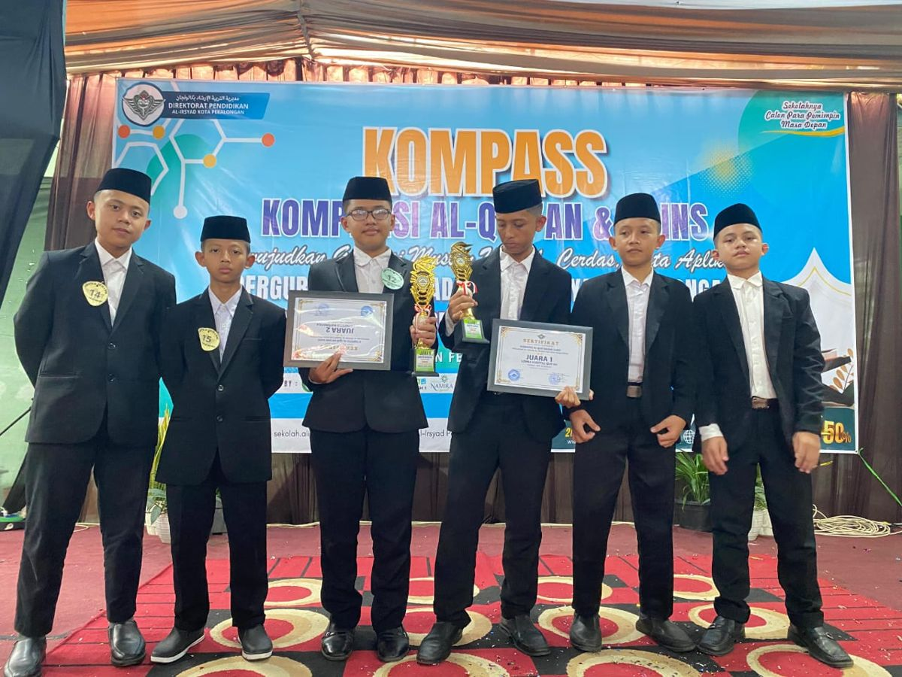


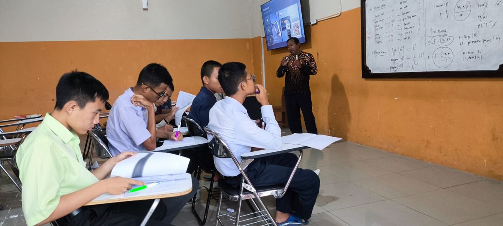


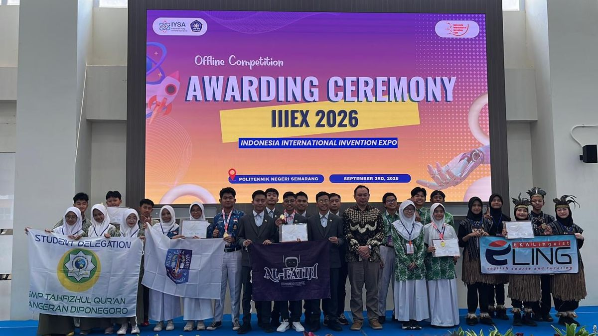
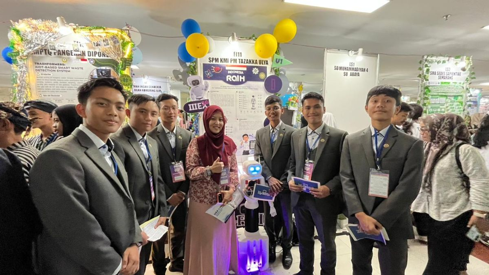
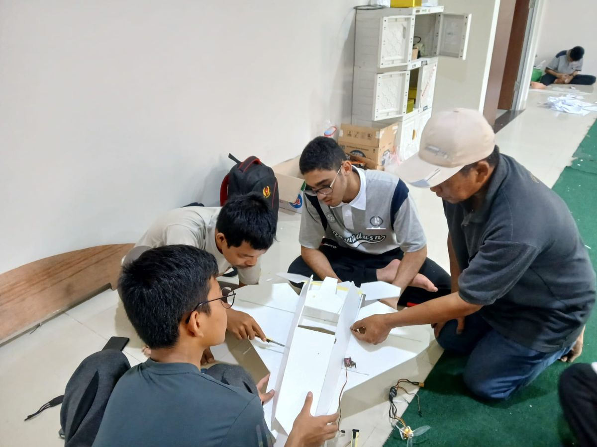
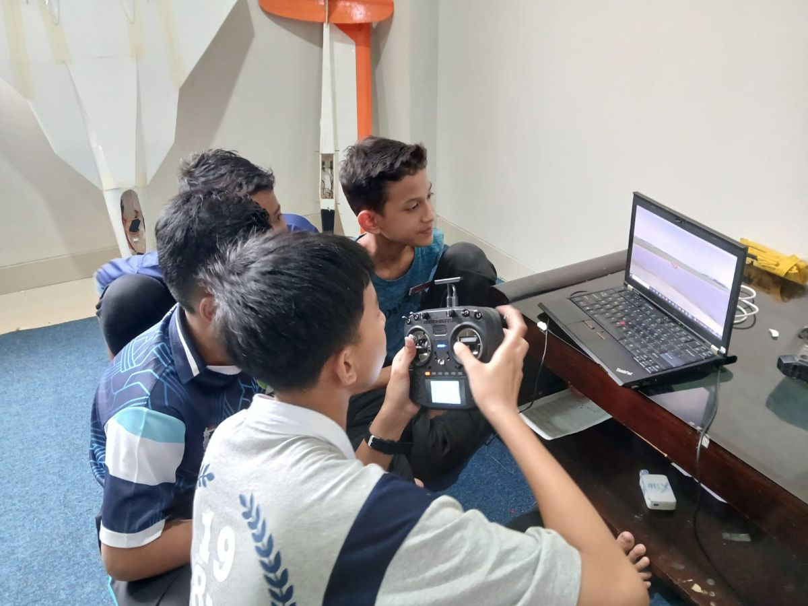
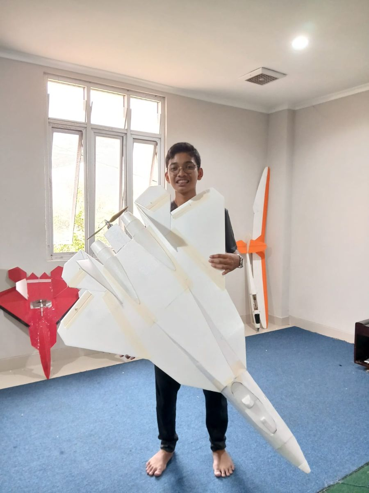

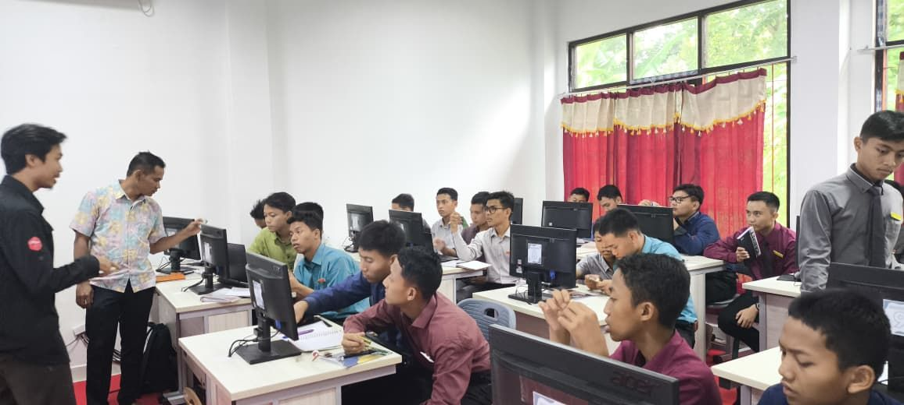


Let's collaborate
Interested in collaboration, mentoring, or joint research? Send us a message.